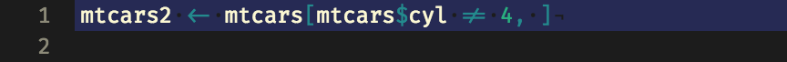
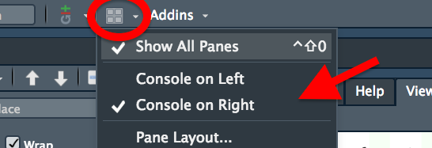
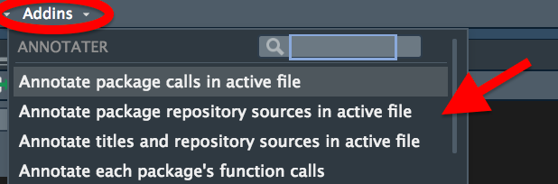
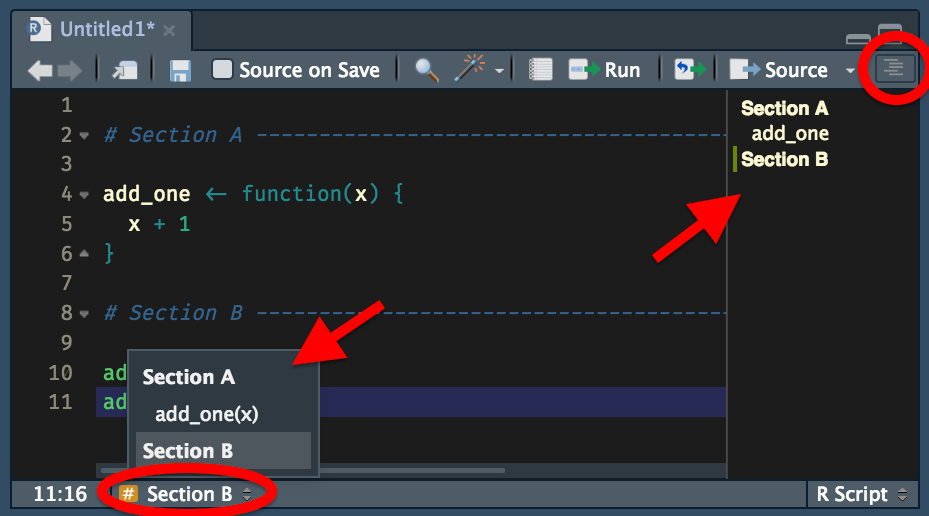
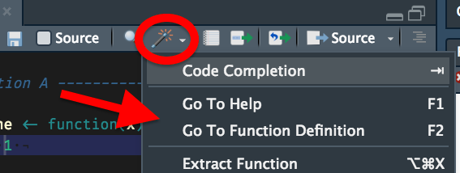

I share my (current!) RStudio setup and some features of the IDE I often use. Tell me about your setup.
Configuration IDEation
R has a decent community online. People love to share opinions about design, customisation and workflow efficiencies. Why is there little at the intersection?
What I do see is people excited to hear about a checkbox or shortcut they never knew existed. I also hear from colleagues who are learning R and want to know more about customising their experience.
So, this post covers some elements of my personal RStudio setup and some bits and bobs about how I use some of the features.1 It’s utterly non-exhaustive, but may be useful for someone. I may add some things every now and again.
You can change to an inbuilt theme at Tools > Global options > Appearance > Editor theme. Add a new theme by clicking Add… and provide a new .tmtheme or .rstheme from file. You can find and tweak examples using the online tmTheme Editor tool by Allen Bargi.
I’m red-green colourblind and the syntax highlighting of this theme lets me distinguish easily between the different code elements. I also like the de-emphasised look of the comments, which are italicised and less bright, making it easier to focus on the code.
How to
I also use syntax highlighting in the console. You can get this by checking the box at Tools > Global Options > Code > Display > Show syntax highlighting in console input.
Sometimes I switch to a light theme, like the default one, when writing text-rich blog posts. Syntax highlighting is less important for me in these instances and dark-on-light text can be easier to read.
Set the font in RStudio at Tools > Global Options > Appearance > Editor font.
I find FiraCode easy to read for both coding and for writing prose. It’s monospaced, of course, but gets away with being a decent sans-serif for longer text blocks too.

The assignment arrow and ‘not equal to’ characters are smushed into ligatures.
FiraCode’s main draw is its ligatures. This is when certain sets of adjacent characters are combined to appear as a single character. For example, the assignment operator gets condensed from < and - to a single, unbroken arrow character. This helps me locate and parse expressions more easily, but ligatures are certainly a Marmite topic.
Layout
I have the console pane on the right-hand side rather than the default of being on the left (see the image at the top of this post). I tend to want to maximise the script and console panes side-by-side so I can focus purely on inputs and outputs.
How to
You can change this setting by clicking the Workspace Panes button (looks like a window) on the ‘taskbar’ at the top of the interface, to the left of the Addins menu. From there you can change the individual tabs of the panes too, by clicking Pane Layout….
I don’t see a lot people doing this, but I think this kind of view is favoured in IDEs like VSCode.

Are you right-paned or left-paned?
I also like to maximise the amount I can see on my screen by zooming out and reducing the font size.
How to
You can set font size at Tools > Global Options > Appearance > Editor font size and Zoom is in the same location.
Addins

Addins: exactly what it says on the tin.
RStudio has a system of ‘addins’ that act as extensions for RStudio. They let you execute shortcuts and other commands via a dropdown menu in the GUI or a keyboard shortcut. Often these are functions that relate to the GUI in some way, like modifying selected text.
How to
Addins are delivered in R packages. You can access them from the Addins dropdown menu. There’s no official catalogue, but see a list of addins in the readme for {addinslist} by Dean Attali, which can also be installed as an addin that adds-in addins, capiche?
I have many, many addins, but want to point out a few I use often:
{blogdown} by Yihui Xie has an addin with selections for new posts and serving the site, which I use frequently
{remedy} by ThinkR has a bunch of useful Markdown-insertion functions, while my {blogsnip} package has a few functions for helping me write {blogdown} posts (e.g. inserting code for an accessible image)2
{datapasta} by Miles McBain lets me add data copied from elsewhere into R, with a handy function for pasting in as a vector
{annotater} by Luis Verde adds a comment next to your library() calls to indicate packages’ purposes and versions, which I find useful when writing ad hoc scripts in a team that includes people who aren’t necessarily familiar with the packages being used
How to
You can set keyboard shortcuts for addins with Tools > Modify Keyboard Shortcuts….
Other GUI elements and settings
Document outline
RStudio has a feature that lets you use comments with multiple hyphens to signal breaks in your code, which make it easier to visually separate different sections. You can insert one of these section breaks with Shift + Cmd + R, which provides a prompt for you to name the section.

Not one, but two ways of navigating between sections.
The names of the sections can then be accessed from:
the document outline panel, which can be accessed by clicking the stacked-lines button in the top-right of the script pane (Shift + Cmd + O)
the ‘jump to’ menu in the lower left of the script pane, which also has a little icon to show you what type of section your cursor is in (for example, it’ll show an ‘f’ if you’re in a function definition)
Magic wand

Sleight-of-cursor.
The ‘magic wand’ menu is available in the script pane and has some features that act a bit like addins. Some frequently-used tools in there for me are:
Reflow comment to break a long, ragged comment across multiple lines so it fits into the conventional 80-character width limit (also Ctrl + Shift + /)
Insert roxygen skeleton to insert a basic {roxygen2} function-documentation block above your function when your cursor is inside it (also Alt + Shift + Cmd + R)
RStudio has modifiable keyboard shortcuts. There’s a number of default shortcuts that I use frequently:
Keys
Action
Cmd + M
Insert a {magrittr} pipe (%>%)
Cmd + -
Insert an assignment arrow (<-)
Cmd + Shift + Fn + F10
Restart RStudio
Cmd + Shift + C
Comment out a selected block
Cmd + I
Auto-indent a line
Cmd + Shift + R
Add a section label
Cmd + D
Document an in-development package
Cmd + L
Load an in-development package
Some shortcuts require you to be an octopus to reach all the keys (I’m looking at you, shortcut-to-restart-RStudio), so modifying your frequently used shortcuts might be a good idea. I’ve got a keyboard with F13 to F15 keys that are otherwise going to waste and as of a recent update, these can be used as mappable RStudio keys.
How to
You can see the keyboard shortcuts at Tools > Keyboard Shortcuts Help and modify them in Tools > Modify Keyboard Shortcuts….
.RData
I like to restart RStudio every few minutes so I know that my environment is empty. This stops me from modifying objects and forgetting about it, which could result in erroneous output.
There are default settings that let RStudio open from where you left off, so that the contents of your environment are intact. I don’t like this and it’s advised against in places like the R for Data Science book by Wickham and Grolemund.
How to
You can turn off this behaviour in Tools > Global Options > General > Basic > Workspace by unchecking Restore .Rdata on startup and setting Save workspace to .RData on exit to Never.
Odds and ends
Rapid fire! I also like:
the 80-character-width guide to show me where to set a line break (Tools > Code > Display > Show margin)
to be able to scroll beyond the end of a script, so the last line can be seen further up the page (Tools > Code > Display > Allow scroll past end of document)
to see .Last.value in the environment pane so I can see the most recently created object (Tools > Global options > Advanced > Show .Last.value in environment listing)
to click the little RStudio cube-logo in the upper-right of the file pane to return to the working directory
the spellcheck function (see the ‘ABC-and-tick’ button at the top of the scripting window)
using multiple cursors by holding Alt and dragging down, which makes insertion and deletion across multiple lines much easier
Themes and fonts can always be tweaked. You’ll get bored of them at some point, or something better will come along. RStudio’s customisability and ongoing development also means that’s a constant stream of new addins and discovered tricks.
I don’t really make use of snippets and I haven’t really mapped any new keyboard shortcuts. I want to look into Garrick Aden-Buie’s {shrtcuts} package (blog, package site) in particular.
I tend to use the terminal window for everything Git-based and I know very little of the Git GUI built into RStudio. I’m comfortable with that, but many I’d like to learn a bit more so I can help colleagues transition more easily into using version control.
Let me know about your themes, fonts, layouts, settings and tips and tricks for RStudio or whatever other IDE you use.
See back here when we’ve all switched to another IDE and made this post redundant.3
Environment
Session info
Last rendered: 2023-07-18 21:38:19 BST
R version 4.3.1 (2023-06-16)
Platform: aarch64-apple-darwin20 (64-bit)
Running under: macOS Ventura 13.2.1
Matrix products: default
BLAS: /Library/Frameworks/R.framework/Versions/4.3-arm64/Resources/lib/libRblas.0.dylib
LAPACK: /Library/Frameworks/R.framework/Versions/4.3-arm64/Resources/lib/libRlapack.dylib; LAPACK version 3.11.0
locale:
[1] en_US.UTF-8/en_US.UTF-8/en_US.UTF-8/C/en_US.UTF-8/en_US.UTF-8
time zone: Europe/London
tzcode source: internal
attached base packages:
[1] stats graphics grDevices utils datasets methods base
loaded via a namespace (and not attached):
[1] htmlwidgets_1.6.2 compiler_4.3.1 fastmap_1.1.1 cli_3.6.1
[5] tools_4.3.1 htmltools_0.5.5 rstudioapi_0.15.0 yaml_2.3.7
[9] rmarkdown_2.23 knitr_1.43.1 jsonlite_1.8.7 xfun_0.39
[13] digest_0.6.33 rlang_1.1.1 fontawesome_0.5.1 evaluate_0.21
Footnotes
Note that I do most of my day-to-day coding on a work machine: a MacBook Air 13-inch (2017) running macOS Sierra with R v3.6.1 and RStudio v1.3.1073. Things may differ for you compared to what I write here.↩︎